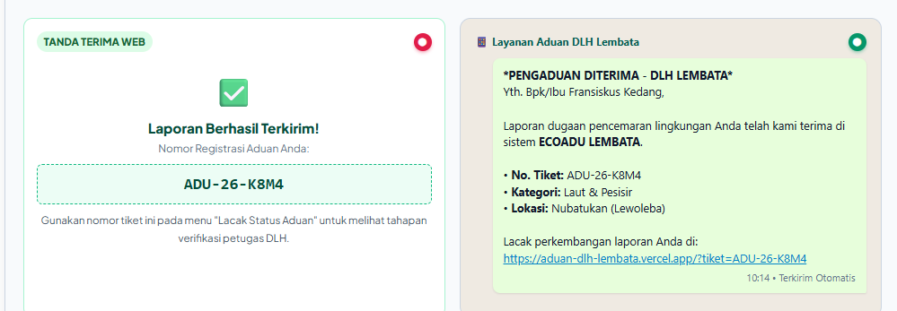

PEMERINTAH KABUPATEN LEMBATA
DINAS LINGKUNGAN HIDUP
Jalan Trans Lembata, Lewoleba, Kabupaten Lembata, Nusa Tenggara Timur 86611
Laman Pengaduan: aduan-dlh-lembata.vercel.app • Pos-el: dlh@lembatakab.go.id • Helpline WA: +62 822-3458-2769
PANDUAN LENGKAP PENGGUNAAN PORTAL PENGADUAN LINGKUNGAN HIDUP
(ECOADU LEMBATA)
Saluran Resmi Penyampaian Laporan Dugaan Pencemaran dan Kerusakan Lingkungan Hidup yang Mudah, Aman, Terbuka, dan Bebas Biaya untuk Seluruh Warga Kabupaten Lembata.
1.1. Mengapa Layanan Pengaduan ECOADU Hadir untuk Warga Lembata?
Kabupaten Lembata memiliki bentang alam yang indah, mulai dari laut pesisir yang kaya hasil tangkapan, teluk Lewoleba yang menawan, hingga perbukitan dan hutan yang sejuk. Namun, pencemaran lingkungan seperti pembuangan sampah sembarangan, limbah cair, tumpahan solar di laut, maupun pembakaran asap tebal dapat merusak kenyamanan dan kesehatan kita bersama.
Selama ini, warga sering kali bingung harus melapor ke mana, atau terkendala jarak yang jauh dari kantor dinas di Lewoleba. Melalui Ekosistem Digital Aduan Lingkungan (ECOADU LEMBATA) yang dikembangkan oleh Dinas Lingkungan Hidup Kabupaten Lembata, seluruh masyarakat kini dapat melaporkan setiap dugaan masalah lingkungan di sekitar tempat tinggalnya langsung melalui HP — kapan saja, di mana saja, tanpa biaya sepeser pun (100% Gratis).
1.2. Jaminan Pelindungan Data Pribadi (UU PDP No. 27 Tahun 2022)
Banyak warga merasa enggan atau takut melapor karena khawatir identitasnya diketahui orang lain atau pihak yang ditegur. Kami sangat memahami kekhawatiran tersebut.
Sistem ECOADU menerapkan standar ketat kepatuhan terhadap Undang-Undang Nomor 27 Tahun 2022 tentang Pelindungan Data Pribadi (UU PDP):
- Identitas Disamarkan di Tampilan Publik: Nama lengkap dan nomor WhatsApp pelapor secara otomatis disensor dengan tanda bintang (contoh:
Fr*** K***dan0812****7890). Siapa pun yang melihat daftar laporan di portal publik tidak akan dapat mengetahui identitas asli Anda. - Hanya Petugas Berwenang yang Melihat: Identitas asli Anda hanya bisa diakses oleh Tim Pengawas DLH Kabupaten Lembata yang telah terotentikasi resmi guna keperluan verifikasi lapangan dan klarifikasi tindak lanjut.
- Aman dan Bebas dari Intimidasi: Hak rasa aman pelapor dijamin sepenuhnya oleh pemerintah daerah.
| Nama Pelapor | Fr*** K*** (Disamarkan) |
| Nomor WhatsApp | 0812****7890 (Disensor) |
| Alamat Domisili | Disembunyikan demi privasi |
| Nama Pelapor | Fransiskus Kedang |
| Nomor WhatsApp | 081234567890 WA Pelapor |
| Alamat Domisili | Kel. Selandoro, Nubatukan |
2.1. Dua Cara Mudah Membuka Formulir Pengaduan
Anda tidak perlu mencari atau mengunduh aplikasi dari Google Play Store atau Apple App Store yang memakan memori ponsel. Portal ECOADU berbasis website modern yang sangat ringan dan langsung bisa diakses lewat 2 cara mudah:

QR Code Resmi Portal Pengaduan Warga ECOADU
Anda bisa menyimpan tautan website ini sebagai bookmark di browser HP atau menambahkan pintasan ke Layar Utama (Add to Home Screen) agar dapat dibuka sewaktu-waktu layaknya aplikasi tanpa membebani memori ponsel.
3.1. Tampilan Beranda Awal Portal Warga & Tombol Mulai Lapor
Saat pertama kali membuka website aduan-dlh-lembata.vercel.app, Anda akan disambut antarmuka yang bersih dan mudah digunakan. Di beranda ini terdapat tombol utama untuk langsung memulai laporan, fitur pelacakan tiket, serta ringkasan angka penanganan pengaduan terkini.
3.3. Panduan Lengkap Mengisi Formulir dari Awal sampai Terkirim (8 Langkah Jelas)
Setelah menyentuh tombol [ ✏️ AJUKAN ADUAN BARU ], layar HP akan langsung menampilkan Formulir Laporan. Isi formulir ini dengan 8 langkah sederhana berikut:
• Langkah 1 — Nama & Nomor WhatsApp Anda (Wajib Diisi): Tulis Nama Lengkap dan Nomor WhatsApp yang aktif (contoh: 081234567890). Nomor WhatsApp wajib diisi agar petugas DLH bisa mengirim bukti terima laporan dan menghubungi Anda jika perlu. Nama dan nomor Anda terlindungi dan tidak akan ditampilkan ke masyarakat umum (dilindungi UU Pelindungan Data Pribadi).
• Langkah 2 — Foto Bukti Kejadian (Sangat Disarankan): Sentuh tombol hijau 📸 Ambil Foto Kamera untuk langsung memotret kondisi pencemaran, atau 📁 Pilih dari Galeri jika foto sudah ada di HP Anda. Bisa unggah sampai 5 foto — ukurannya otomatis dihemat agar tidak boros kuota.
• Langkah 3 — Lokasi Kejadian: Pilih nama Kecamatan dan Desa/Kelurahan, lalu tulis patokan tempat yang mudah dicari (contoh: Di belakang Dermaga Jeti Lewoleba). Kalau Anda sedang berada di lokasi kejadian, sentuh tombol 🎯 Kunci GPS Presisi Tinggi agar HP Anda langsung mencatat titik lokasi secara otomatis.
• Langkah 4 — Jenis Masalah & Cerita Singkat: Sentuh 1 dari 6 tombol jenis masalah (Laut & Pesisir, Sampah Ilegal, Air & Sungai, Udara, Limbah Berbahaya, atau Kerusakan Lingkungan), pilih perkiraan tanggal pertama kali masalah ini terlihat, lalu ceritakan secara singkat apa yang terjadi.
• Langkah 5 — Apa yang Anda Harapkan: Tulis harapan Anda kepada DLH Lembata (contoh: Pantai dibersihkan, pembuangan solar ke laut dihentikan, atau pelaku diberikan teguran resmi).
• Langkah 6 — Pernah Lapor Sebelumnya? Pilih "Belum Pernah" jika baru pertama kali melapor, atau "Pernah Melapor" jika masalah ini sudah pernah disampaikan ke kantor desa atau polisi.
• Langkah 7 — Klausul Pernyataan Kebenaran Data (Wajib Dicentang): Beri tanda centang pada kotak klausul: "Saya menyatakan bahwa seluruh data, keterangan, dan bukti foto yang disampaikan adalah BENAR sesuai fakta di lapangan serta siap dipertanggungjawabkan." Kotak centang ini merupakan syarat validasi wajib sebelum laporan dapat dikirimkan.
• Langkah 8 — Kirim Laporan: Sentuh tombol hijau besar [ 📲 KIRIM PENGADUAN SEKARANG ] di bagian paling bawah. Laporan Anda langsung diterima oleh petugas DLH dan nomor laporan resmi Anda langsung muncul di layar.
4.1. Mengenal 6 Pilihan Masalah Lingkungan yang Bisa Dilaporkan
Portal ECOADU menyediakan 6 pilihan jenis masalah lingkungan yang bisa dilaporkan warga. Pilih salah satu yang paling sesuai dengan apa yang Anda lihat:
5.1. Tiga Cara Mudah Menunjukkan Lokasi Kejadian
Supaya petugas DLH bisa langsung menemukan lokasi pencemaran di lapangan, warga punya 3 cara mudah untuk menunjukkan tempatnya:
Tinggal pilih nama Kecamatan (9 Kecamatan di Lembata) dan Desa/Kelurahan dari daftar yang tersedia.
Jika Anda sedang berada langsung di tempat kejadian, sentuh tombol hijau agar ponsel mendeteksi lokasi otomatis.
Bila melapor saat sudah di rumah, geser penanda merah di peta dan sebutkan patokan tempat yang jelas di kolom rincian.
6.1. Bukti Laporan, Panduan Visual Lacak Status & 5 Arti Status bagi Pelapor
Setelah menekan tombol kirim, laporan Anda langsung diterima — tidak akan hilang atau terlewat. Ada 4 hal yang akan Anda dapatkan setelah mengirim laporan:
• 1. Nomor Laporan Muncul di Layar HP Anda: Layar langsung menampilkan
Nomor Laporan Resmi Anda (contoh: ADU-26-K8M4). Simpan nomor ini — itu bukti bahwa laporan Anda sudah masuk.
• 2. Pesan WhatsApp Konfirmasi Otomatis: WhatsApp Anda akan langsung menerima pesan resmi dari Layanan Aduan DLH Lembata. Isi pesannya mencantumkan
nomor laporan, jenis masalah, nama wilayah, dan tautan untuk mengecek perkembangan laporan.
• 3. Cara Mengecek Perkembangan Laporan:
• Lewat Pesan WhatsApp (Paling Mudah): Buka pesan WhatsApp dari DLH Lembata, lalu
ketuk tautan biru yang ada di pesan. Layar langsung menampilkan status terbaru laporan Anda (misalnya: Sedang Dicek Petugas atau Sudah Selesai Ditangani) — tanpa perlu mengetik ulang nomor laporan.
• Lewat Website ECOADU: Buka website ECOADU, sentuh tombol "Lacak Status Aduan", lalu masukkan nomor laporan Anda. Bisa dilakukan kapan saja, 24 jam.
• 4. Identitas Anda Tetap Aman: Nama lengkap dan nomor HP Anda otomatis disembunyikan dari tampilan publik. Anda bisa melapor dengan tenang — identitas Anda terlindungi.

Yth. Bpk/Ibu Fransiskus Kedang,
Laporan dugaan pencemaran lingkungan Anda telah kami terima di sistem ECOADU LEMBATA.
• No. Tiket: ADU-26-K8M4
• Kategori: Laut & Pesisir
• Lokasi: Nubatukan (Lewoleba)
Lacak perkembangan laporan Anda di:
https://aduan-dlh-lembata.vercel.app/?tiket=ADU-26-K8M4
Ketika warga ingin mengecek perkembangan penanganan pengaduan secara mandiri, warga cukup menyentuh tautan biru di pesan WhatsApp resmi atau membuka menu "Lacak Status Aduan" pada portal ECOADU LEMBATA. Sistem langsung menampilkan antarmuka pencarian nomor tiket dan kartu hasil pelacakan transparan berikut:
"Pemeriksaan lapangan selesai (skor checklist 5/5 terpenuhi). DLH telah mengerahkan 1 unit armada dump truck dan 6 personil regu kebersihan untuk membersihkan timbulan sampah plastik di sempadan Pantai Jeti, serta memasang papan peringatan larangan membuang limbah sembarangan."
Agar warga tidak bingung dengan istilah kedinasan, berikut adalah tabel penjelasan sederhana makna dari setiap status yang muncul pada layar pelacakan tiket atau notifikasi WhatsApp:
| Status di Layar | Warna Tanda | Arti bagi Warga Pelapor | Yang Sedang Dikerjakan DLH | Yang Perlu Dilakukan Warga |
|---|---|---|---|---|
| Kuning Keemasan | Laporan Anda sudah tersimpan aman di database resmi DLH Lembata dan siap diperiksa. | Operator memeriksa kelengkapan isi aduan dan meneruskan ke Kepala Seksi Pengawasan LH. | Simpan nomor tiket aduan Anda (ADU-26-XXXX). Tidak perlu mengirim laporan berulang. |
|
| Diverifikasi | Ungu Indigo | Proses pemeriksaan kebenaran laporan warga secara langsung di lapangan oleh Tim Pengawas DLH. | Tim verifikator mengecek titik koordinat GPS, menguji kondisi fisik lapangan, dan mengambil foto bukti. | Pastikan nomor WhatsApp Anda aktif bila petugas membutuhkan panduan patokan lokasi tambahan. |
| Ditindaklanjuti | Biru Langit | Masalah lingkungan terbukti ada di lapangan dan DLH sedang melakukan aksi nyata pemulihan. | Armada truk sampah dikerahkan, sampel diuji, mediasi digelar, atau teguran tertulis diterbitkan. | Pantau perkembangan catatan tindakan petugas lewat tautan pelacakan WhatsApp kapan saja. |
| Selesai | Hijau Segar | Penanganan aduan lingkungan telah tuntas diselesaikan dan Berita Acara resmi telah diterbitkan. | Lokasi telah dibersihkan/dipulihkan, pihak terlapor menaati aturan, dan berkas diarsipkan. | Penanganan selesai. Terima kasih atas peran aktif Anda menjaga kelestarian bumi Lembata! |
| Ditolak | Merah Mawar | Aduan tidak dapat diproses lebih lanjut oleh DLH dengan alasan kedinasan yang jelas. | Pemeriksaan membuktikan data fiktif, bukan ranah DLH (perdata tanah), atau terlapor menolak diperiksa. | Baca alasan penolakan pada catatan petugas di layar lacak. Hubungi DLH jika ada kekeliruan data. |
💡 Tips Praktis untuk Warga:
Jangan hapus pesan WhatsApp yang Anda terima dari Layanan Aduan DLH Lembata. Kapan pun Anda ingin mengetahui apakah petugas sudah turun ke lokasi atau sedang membersihkan sampah/limbah, cukup ketuk tautan biru di pesan tersebut. Anda tidak perlu repot mengetik ulang nomor laporan.
7.1. Pertanyaan Umum & Jawaban Praktis (FAQ Warga)
Berikut adalah jawaban cepat atas beberapa hal yang sering ditanyakan warga:
| Pertanyaan Warga | Penjelasan & Solusi Praktis |
|---|---|
| Apakah nama & nomor HP saya aman dari pihak yang dilaporkan? | Sangat aman. Sesuai UU Perlindungan Data Pribadi (UU No. 27/2022), identitas pelapor otomatis disamarkan (contoh: Fr*** K***) dan tidak dapat dilihat oleh publik maupun pihak yang dilaporkan. Hanya petugas DLH berwenang yang bisa melihat untuk konfirmasi penanganan. |
| Apakah harus unduh aplikasi atau bikin akun dulu? | Tidak perlu sama sekali. Cukup buka website di HP (Chrome atau Safari), formulir langsung siap diisi dan dikirim tanpa syarat login/pendaftaran yang rumit. |
| Bagaimana jika tombol Kunci GPS di HP saya tidak jalan? | Pastikan izin lokasi peramban HP Anda aktif ("Allow / Izinkan"). Jika masih tidak bisa, Anda cukup pilih nama Kecamatan & Desa, lalu tulis patokan tempat yang jelas (contoh: "Di belakang dermaga jeti nelayan"). Petugas tetap bisa menemukan lokasinya. |
| Apakah boleh melapor kalau belum sempat ambil foto? | Boleh. Foto bukti sangat membantu petugas agar penanganan lebih cepat, namun bila situasi tidak memungkinkan mengambil foto, laporan tetap bisa dikirim dengan menuliskan penjelasan kondisi yang jelas. |
| Bagaimana kalau saya tidak menerima pesan WhatsApp setelah kirim? | Pastikan nomor WhatsApp yang dimasukkan aktif dan benar. Nomor laporan resmi Anda tetap tercatat di layar HP (contoh: ADU-26-K8M4). Catat nomor ini untuk mengecek status lewat menu Lacak Status Aduan di website. |
| Berapa lama laporan ditanggapi petugas DLH? | Laporan masuk langsung tercatat di dashboard petugas verifikator DLH. Petugas akan memverifikasi kelengkapan data dan menjadwalkan tindakan ke lapangan sesuai urutan antrean serta tingkat urgensi masalah lingkungan yang dilaporkan. |